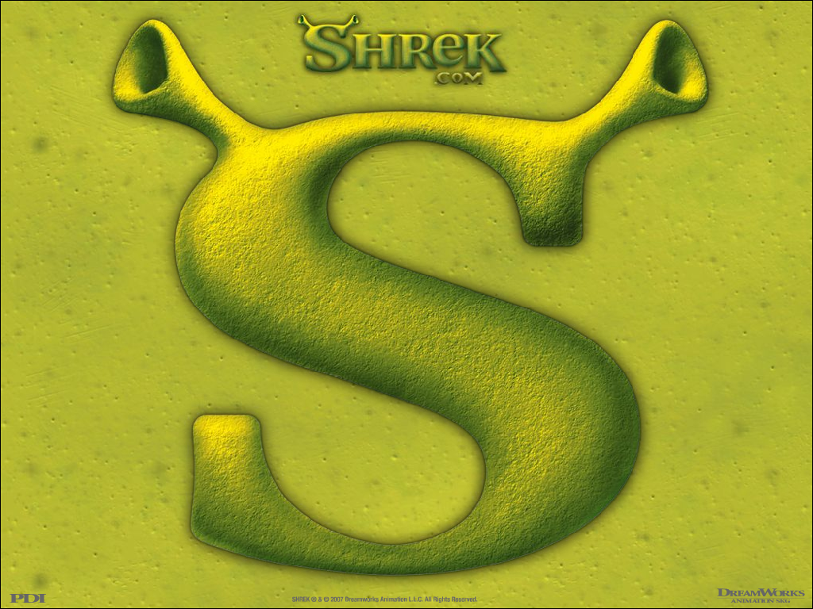
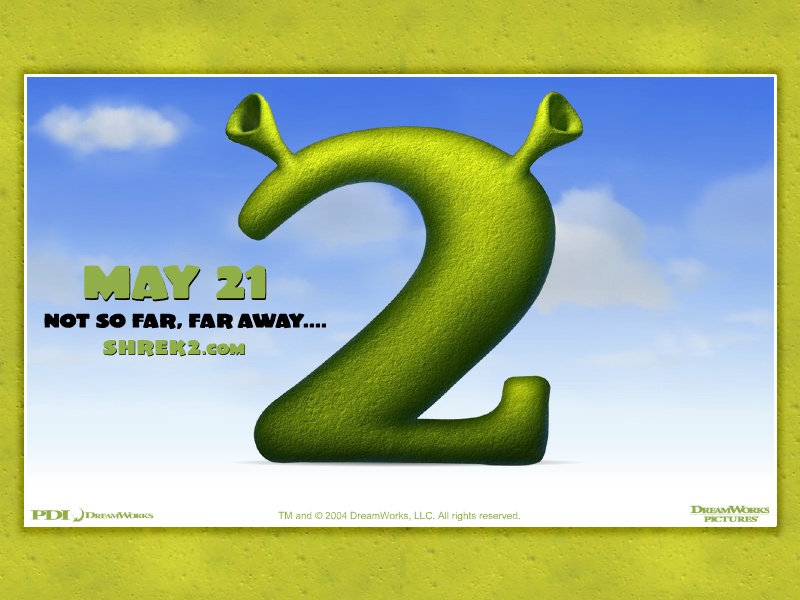
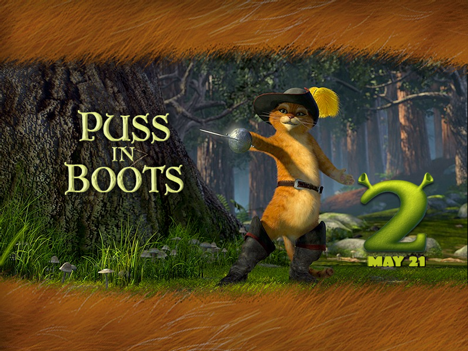
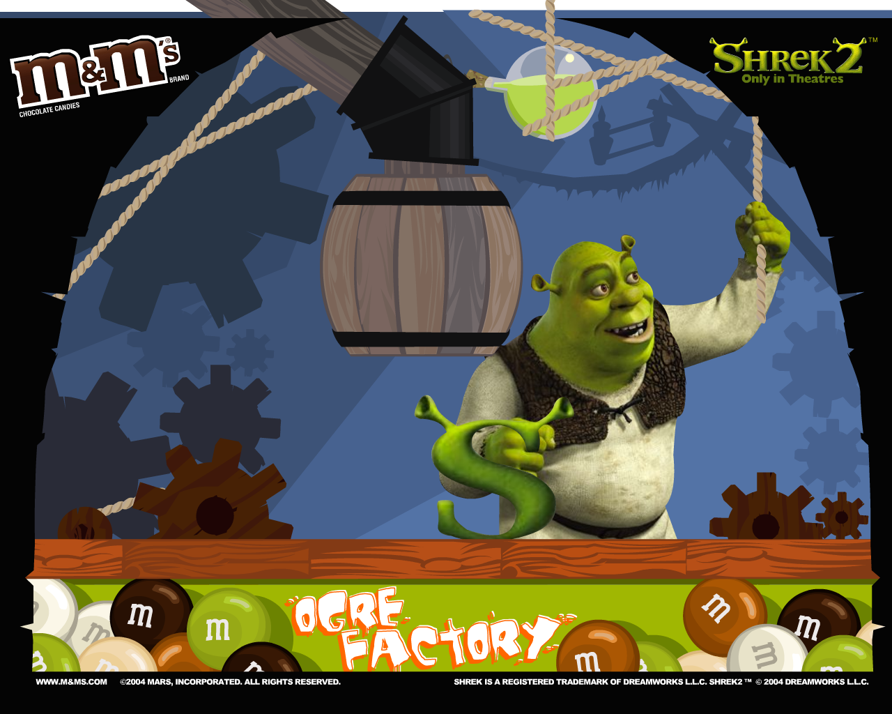
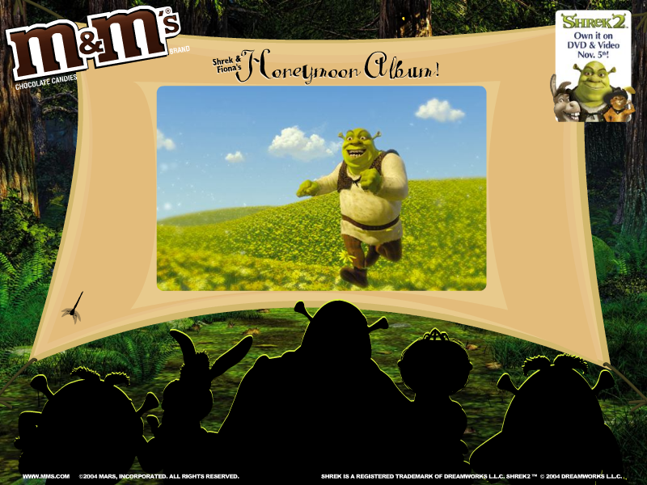

 .exe file zipped (1.88 MB)
.hqx file (Mac OS) (626 KB)
.exe file zipped (1.88 MB)
.hqx file (Mac OS) (626 KB)
.exe file zipped (English, Windows) (1.97 MB).exe file zipped (German, Windows) (1.83 MB).sit file (Mac OS 9) (1.92 MB).sit file (Mac OS X) (1.75 MB)
.exe file zipped (English, Windows) (1.97 MB).exe file zipped (German, Windows) (1.83 MB).sit file (Mac OS X) (1.78 MB)
.exe file zipped (Windows) (1.22 MB).hqx file (Mac OS 9) (1.18 MB).hqx file (Mac OS X) (1.01 MB)
.exe file zipped (Windows) (1.59 MB).hqx file (Mac OS 9) (1.64 MB).hqx file (Mac OS X) (1.47 MB)